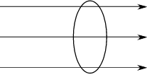
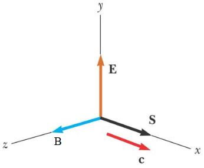
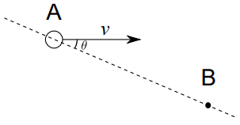
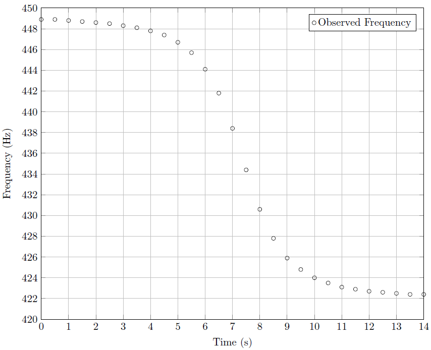

\large{ МИНИСТЕРСТВО НА ОБРАЗОВАНИЕТО И НАУКАТА
**НАЦИОНАЛНО ЕСЕННО СЪСТЕЗАНИЕ ПО ФИЗИКА**
**1-3 ноември 2018 г., гр. Сандански**
**СПЕЦИАЛНА ТЕМА**
} \end{center}
Задача 1. Вектор на Пойнтинг
Векторът на Пойнтинг описва разпространението на електромагнитната (ЕМ) енергия в пространството. Дефинира се по следния начин. Посоката му съвпада с посоката на разпространение на енергията, а големината му е равна на енергията преминала за единица време през единица площ, перпендикулярна на посоката на . В тази задача ще изведете формула за за монохроматична ЕМ вълна във вакуум, изразен чрез интензитета на електричното поле и индукцията на магнитното поле . За целта следвайте стъпките, описани в долните подточки.
\begin{wrapfigure}{r}{0.35\textwidth}  \caption{} \end{wrapfigure}
а) Най-напред да допуснем, че пространството е еднородно изпълнено с ЕМ енергия с плътност , която се разпространява в определена посока, напр. в хоризонтално направление (фиг. 1), със скоростта на светлината . Намерете количеството енергия (), преминала за единица време през единица площ, перпендикулярна на посоката на разпространение. Полученият израз трябва да съдържа и . [1 т.]
Тъй като пространството е изпълнено с електрично и магнитно поле, плътността на енергията е сума от плътността на енергията на електричното поле и тази на магнитното поле: . За да намерите , разгледайте зареден плосък кондензатор без диелектрик. Знаем, че в добро приближение на безкраен кондензатор, т.е. когато размерът на плочите е много по-голям от разстоянието между тях, електричното поле е локализирано изцяло между плочите на кондензатора, където то е еднородно. Знаем също така, че енергията на зареден кондензатор може да се интерпретира като енергия на електричното поле, което той създава. Следвайте стъпките:
б) Изведете формула за капацитета на безкраен плосък кондензатор, изразен чрез площта на плочата , разстоянието между двете плочи и фундаментални константи. Като междинна стъпка получете интензитета на електричното поле в обема на кондензатора с помощта на теоремата на Гаус. [1 т.]
в) Изведете формула за електростатичната енергия на кондензатора, изразена чрез капацитета и напрежението между плочите . [1 т.]
г) Използвайки получения резултат, изведете формула за , изразена чрез интензитета и фундаментални константи. Приемете, че енергията на безкрайния кондензатор е съсредоточена изцяло в обема му. [1 т.]
Аналогично, за да намерите , разгледайте соленоид, по който тече постоянен ток. В добро приближение на безкраен соленоид, когато дължината на соленоида е много по-голяма от радиуса му, полето е локализирано изцяло в обема на соленоида, където то е еднородно.Следвайте стъпките:
д) Изведете формула за индуктивността на безкраен соленоид. Като междинна стъпка изведете магнитнaтa индукция в обема на соленоида с помощта на теоремата за циркулацията. Означете дължината с , площта на напречното сечение с , а броя намотки на единица дължина с . [1 т.]
е) Изведете формула за магнитната енергия на соленоида, изразена чрез индуктивността и тока . [1 т.]
ж) Използвайки получения резултат, изведете формула за , изразена чрез индукцията и фундаментални константи. Приемете, че енергията на безкрайния соленоид е съсредоточена изцяло в обема му. [1 т.]
\begin{wrapfigure}{r}{0.3\textwidth}  \caption{} \end{wrapfigure}
з) Напишете израз за плътността . [1 т.]
Разгледайте електромагнитна вълна във вакуум, разпространяваща се по оста , както е показано на фиг. 2. Връзката между големините на електричното поле и магнитното поле във всеки момент е .
и) Изведете формула за големината на вектора , в която участват полетата и . Използвайте резултата от подточка а), както и формулата за скоростта на светлината: . [1 т.]
й) Изведете формула за вектора , която трябва да задава не само големината на вектора, но и посоката му. Посоките на векторите , и са указани на фиг. 2. [1 т.]
Упътване:
Теорема на Гаус: , където интегрираме по повърхност, заграждаща заряд .
Теорема за циркулацията: където интегрираме по контур, заграждащ ток .
Задача 2. Механика
\begin{wrapfigure}{r}{0.55\textwidth}
 \caption{}
\end{wrapfigure}
\caption{}
\end{wrapfigure}
Част 1
Фигура 3 показва изображение от телескопа Хъбъл на Fomalhaut b – първата планета извън Слънчевата система, наблюдавана във видима светлина. Планетата обикаля в орбита около звездата Fomalhaut. Мащабът на по-голямото изображение е показан в долния ляв ъгъл на Фиг. 3.
а) Планетата обикаля по кръгова орбита с радиус и период . За две години тя изминава разстояние , което може да бъде измерено от фигурата. Изведете израз за масата на звездата, съдържащ , , масата на Слънцето и фундаментални константи. [2 т.]
б) Оценете масата на звездата в Слънчеви маси. Приемете, че орбитата на планетата е кръгова и че равнината на орбитата съвпада с равнината на изображението. Спомнете си, че Земята обикаля около Слънцето по орбита с радиус 1 астрономична единица () за 1 година (). [1 т.]
в) Въведете означението . Оценете относителната грешка на , при положение, че относителните грешки при измерване на и са 10%. Напишете долна и горна граница за . [2 т.]
Упътване: Нека , където , , и са константи, а , и са променливи. Ако дефинираме грешката в като средноквадратично отклонение от средната стойност: , относителната грешка се смята по следната формула:
Част 2
Маслена капка с маса m и пренебрежими размери e изстреляна вертикално нагоре със скорост . Силата на съпротивлението от страна на въздуха е пропорционална на скоростта: . Капката се издига до височина и след време пада в първоначалната точка от своята траектория. Земното ускорение е . Намерете:
г) израз за скоростта на капката като функция на времето ; [2 т.]
д) времето , за което капката се издига до най-високата точка от траекторията си; [1 т.]
е) максималната височина . [2 т.]
Задача 3. Ефект на Доплер
\setcounter{figure}{4} \begin{wrapfigure}{r}{0.45\textwidth}  \caption{} \end{wrapfigure}
Част 1
На фиг. 5 е показан монохроматичен източник на звук (А), който се движи праволинейно с постоянна скорост . Векторът на скоростта е насочен под ъгъл спрямо правата, свързваща източника с приемник (В). Източникът излъчва звук с постоянна честота . Ефектът на Доплер се изразява в това, че честотата , регистрирана от приемника, се различава от излъчената честота . Скоростта на звука е c.
а) Изведете формула за честотата като функция на , , и . [2 т.]
\begin{wrapfigure}{r}{0.55\textwidth}  \caption{} \end{wrapfigure}
Част 2
Звуковият източник преминава край приемника. Началното разстояние, от което той потегля, е огромно, така че първоначално ъгълът е приблизително нула. На фиг. 6 е показана регистрираната честота като функция на времето. Скоростта на звука е 340 m/s. Изведете аналитичен и числен израз за:
б) скоростта и честотата . [1 т.]
в) най-малкото разстояние между източника и приемника. [3 т.]
Част 3
Човек се е скрил под скална козирка с цел да се предпази от проливен дъжд. В даден момент козирката рухва и човекът започва да крещи с честота . Земното ускорение е . Изведете формула за:
г) честотата , която „чува“ козирката. [2.5 т.]
д) честотата на отразения от козирката звук, който чува човекът. [2.5 т.]